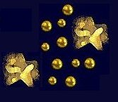

| song |
| home page |
| . Our lives are underscored with the noise that the modern world generates. This WebRing is devoted to those who create sound and music for the theatre, and the companies that help them. To join the Theatrical Sound Designer and Composer Ring or learn more, visit the Theatrical Sound Designer and Composer Ring Homepage. Any information used, in whatever situation, is entirely at the users risk. |
|  | .Songs of Texas The Yellow Rose (and other Songs) of Texas The following song files conform to the Musical Instrument Digital Interface (MIDI) standard. You must have a sound card installed on your PC to be able to play the MIDI files, and your Browser must be linked to your MIDI player software to play the songs on-line. For really great CD quality sound, we also recommend that you have a "wavetable" type sound card. Send us a midi file of your school song and we'll be glad to add it to the list. |